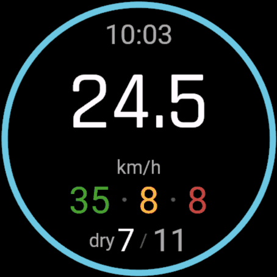

CleanJibe for Garmin
open beta · Connect IQConnect IQ watch app — fenix 8 and fenix 7 families

- Knows when the board is up on the foil, and counts every flight and touchdown as you ride.
- Scores each jibe as flew through, touched down or fell in — and keeps your no-fall streak running.
- Speed records live on the wrist: best 2 s and best 10 s.
- Works out the wind direction by itself after a few minutes of riding.
- Counts pump strokes and takeoff attempts from the wrist accelerometer.
- Records as a Windsurf activity, so it no longer lands in Garmin Connect as a walk.